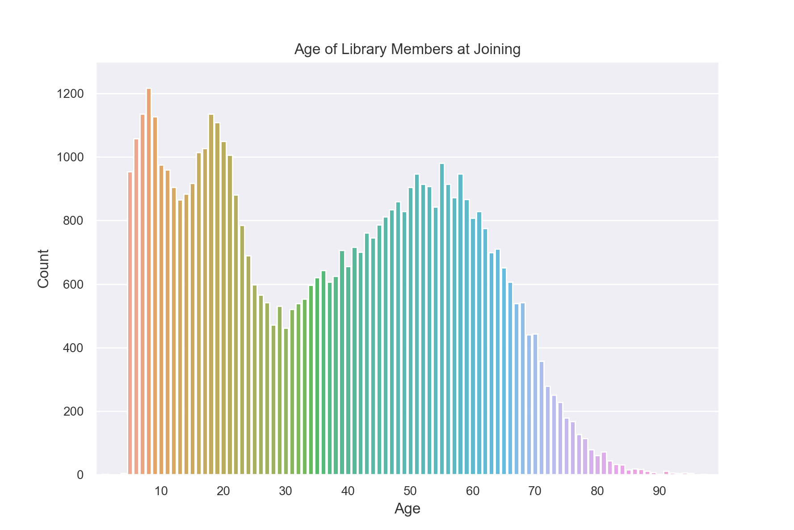
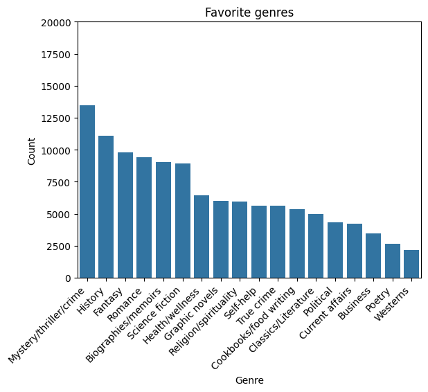
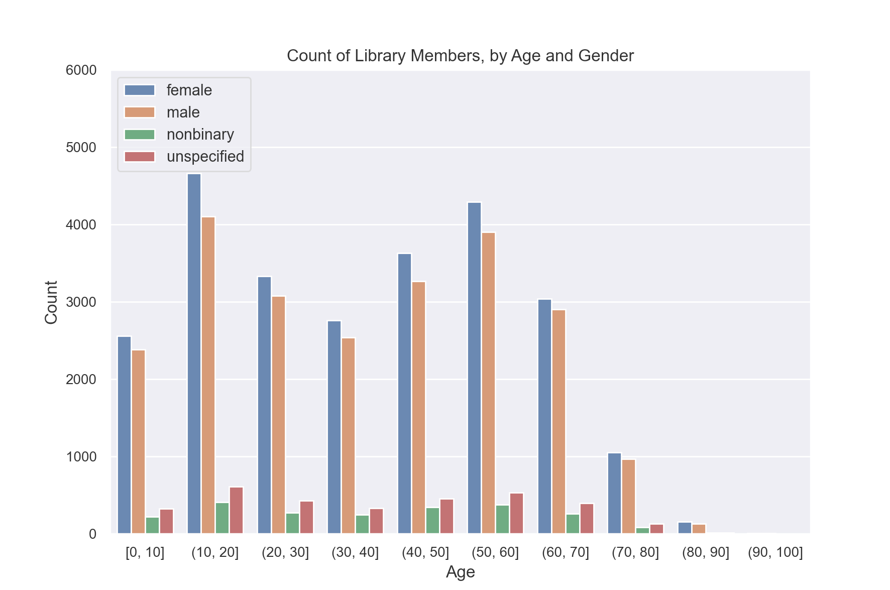

Simple transformations#
So far we have learned how to perform aggregations on our data, but sometimes we need to transform our data before they are ready to be aggregated. In this tutorial, we’ll demonstrate a few ways that we can transform our data using filters, maps, flat maps, binning, and public joins.
Setup#
As usual, we need to create a Session with our dataset.
import matplotlib.pyplot as plt
import seaborn as sns
from pyspark import SparkFiles
from pyspark.sql import SparkSession
from tmlt.analytics import (
AddOneRow,
KeySet,
PureDPBudget,
QueryBuilder,
Session,
)
spark = SparkSession.builder.getOrCreate()
spark.sparkContext.addFile(
"https://tumult-public.s3.amazonaws.com/library-members.csv"
)
members_df = spark.read.csv(
SparkFiles.get("library-members.csv"), header=True, inferSchema=True
)
Remember that we are using an infinite privacy budget in these tutorials, but that this should not be done in production.
session = Session.from_dataframe(
privacy_budget=PureDPBudget(epsilon=float('inf')),
source_id="members",
dataframe=members_df,
protected_change=AddOneRow(),
)
Revisiting the filter transformation#
You might recall that we already used a transformation in our tutorial about privacy budgets! Let’s run that query again.
minor_query = QueryBuilder("members").filter("age < 18").count()
minor_count = session.evaluate(
minor_query,
privacy_budget=PureDPBudget(epsilon=1),
)
minor_count.show()
+-----+
|count|
+-----+
|13815|
+-----+
In this query, we first we filtered the data to only include rows where the age was less than 18, and then counted the total number of rows. More complicated filters are also supported: Tumult Analytics filters support the same syntax as Spark SQL.
With Tumult Analytics, using transformations is that easy, and we will see that other transformations can be similarly expressed.
Maps#
Suppose we want to create a histogram displaying the age each library member was when they joined.
To do this, we will need a mapping function that takes in a row from our data as a dictionary and returns a new row. In this case, the new row will have a different column containing the calculated age.
Note
Functions used in maps and flat maps should be pure functions. For more information, consult the privacy promise topic guide.
from datetime import datetime as dt
def age_joined(row):
date_joined = row["date_joined"]
if isinstance(date_joined, str):
date_joined = dt.fromisoformat(date_joined)
age_at_joining = row["age"] - (dt.today().year - date_joined.year)
return {"age_joined": age_at_joining}
example_row = {
"id": 421742,
"name": "Panfilo",
"age": 51,
"gender": "male",
"education_level": "doctorate-professional",
"zip_code": 27513,
"books_borrowed": 32,
"favorite_genres": "Romance;Classics/Literature;Current affairs",
"date_joined": "2021-12-22",
}
print(age_joined(example_row))
{'age_joined': 49}
Now that we have our mapping function, we can use it in a query.
To add the map to our query, we also need to provide the new_column_types. It should
be a dictionary containing the names and types for each of the columns created by the
map. In this case, the type is INTEGER.
We also set augment=True. This tells the query to keep the original columns in
addition to the columns created by the map. If we used augment=False, the gender
column would no longer be available: the only column in the transformed data would be
age_joined.
from tmlt.analytics import ColumnType
ages = list(range(0, 100)) # [0, 6, ..., 99]
age_keys = KeySet.from_dict({"age_joined": ages})
age_joined_count_query = (
QueryBuilder("members")
.map(age_joined, new_column_types={"age_joined": ColumnType.INTEGER}, augment=True)
.groupby(age_keys)
.count()
)
age_joined_counts = session.evaluate(
age_joined_count_query,
privacy_budget=PureDPBudget(epsilon=1),
)
sns.set(rc = {'figure.figsize':(9,6)})
sns.barplot(
x="age_joined",
y="count",
data=age_joined_counts.toPandas()
)
plt.xticks([10*i for i in range(1, 10)])
plt.ylim(0, 1300)
plt.title("Age of Library Members at Joining")
plt.xlabel("Age")
plt.ylabel("Count")
plt.tick_params(axis='both', which='major', labelsize=10)
plt.show()

Flat maps#
Similar to a map, we can also apply a “flat map” to our data. A flat map is similar to a map, but instead of mapping each input row to a single new row, it maps each input row to zero or more new rows.
We will use a flat map to count how many members included each genre in their favorites. The ‘favorite_genre’ column in the data contains one to three genres separated by semicolons.
Just like we did for map, we will write a function to do the desired transformation on a single row. In this case we will transform our data from one where there is one row for each library member to one where there are multiple rows per library member, one for each of their favorite genres (up to three times as many rows).
def expand_genre(row):
return [{"genre": genre} for genre in row["favorite_genres"].split(";")]
example_row = {
"id": 421742,
"name": "Panfilo",
"age": 51,
"gender": "male",
"education_level": "doctorate-professional",
"zip_code": 27513,
"books_borrowed": 32,
"favorite_genres": "Romance;Classics/Literature;Current affairs",
"date_joined": "2021-12-22",
}
print(expand_genre(example_row))
[{'genre': 'Romance'}, {'genre': 'Classics/Literature'}, {'genre': 'Current affairs'}]
Like map, flat_map has the new_column_types and augment options.
In this example, we leave augment with its default value of False.
Unlike map, flat_map has an argument max_rows. It clamps the maximum number
of new rows that can be created for each input row. This serves a similar function as
the clamping bounds on aggregations we used in the
tutorial about numerical aggregations, and also has the
analogous trade-offs: higher values for max_rows will result in more noise in the
final results, while lower values may cause more rows to be silently dropped. In this
case, the choice is easy: no members have more than three favorites and there are many
members with three, so we set max_rows=3.
genre_keys = KeySet.from_dict(
{
"genre": [
"Mystery/thriller/crime",
"History",
"Biographies/memoirs",
"Romance",
"Cookbooks/food writing",
"Science fiction",
"Fantasy",
"Classics/Literature",
"Health/wellness",
"Religion/spirituality",
"Self-help",
"True crime",
"Political",
"Current affairs",
"Graphic novels",
"Business",
"Poetry",
"Westerns",
],
}
)
genre_count_query = (
QueryBuilder("members")
.flat_map(
expand_genre,
new_column_types={"genre": ColumnType.VARCHAR},
max_rows=3,
)
.groupby(genre_keys)
.count()
)
genre_counts = session.evaluate(
genre_count_query,
privacy_budget=PureDPBudget(epsilon=1),
)
g = sns.barplot(
x="genre",
y="count",
data=genre_counts.toPandas().sort_values("count", ascending=False),
color="#1f77b4",
)
g.set_xticklabels(g.get_xticklabels(), rotation=45, horizontalalignment="right")
plt.ylim(0, 20000)
plt.title("Favorite genres")
plt.xlabel("Genre")
plt.ylabel("Count")
plt.show()

Binning#
So far if we wanted to create a histogram of age and gender, we would have needed to use separate keys for each age. Instead, we will show how we can use age ranges as keys.
First, we need to decide on what bins we want to use for ages. Let’s use groups of 10 years. So 0-9, 10-19, and so on.
The simplest way to do this is to define a BinningSpec object,
which allows us to assign values to bins based on a list of bin edges.
from tmlt.analytics import BinningSpec
# bin edges at [0, 10, 20,...,100]
age_binspec = BinningSpec(bin_edges = [10*i for i in range(0, 11)])
example_row = {
"id": 421742,
"name": "Panfilo",
"age": 51,
"gender": "male",
"education_level": "doctorate-professional",
"zip_code": 27513,
"books_borrowed": 32,
"favorite_genres": "Romance;Classics/Literature;Current affairs",
"date_joined": "2021-12-22",
}
age = example_row["age"]
print(age_binspec(age))
(50, 60]
Now that we have our bins specified, we can use them in a query.
To add the bins to our query, we use the bin_column
feature of the QueryBuilder interface, which creates a new column by
assigning the values in a given column to bins. Here, we provide the column
we want to bin and the BinningSpec object, as well as the optional name parameter
to specify the name of the new column.
from tmlt.analytics import ColumnType
binned_age_gender_keys = KeySet.from_dict(
{
"binned_age": age_binspec.bins(),
"gender": ["female", "male", "nonbinary", "unspecified"],
}
)
binned_age_gender_count_query = (
QueryBuilder("members")
.bin_column("age", age_binspec, name="binned_age")
.groupby(binned_age_gender_keys)
.count()
)
binned_age_gender_counts = session.evaluate(
binned_age_gender_count_query,
privacy_budget=PureDPBudget(epsilon=1),
)
gender_order = ["female", "male", "nonbinary", "unspecified"]
sns.set(rc = {'figure.figsize':(9,6)})
sns.barplot(
x="binned_age",
y="count",
order = age_binspec.bins(),
hue="gender",
hue_order=gender_order,
data=binned_age_gender_counts.toPandas()
)
plt.ylim(0, 6000)
plt.title("Count of Library Members, by Age and Gender")
plt.xlabel("Age")
plt.ylabel("Count")
plt.tick_params(axis='both', which='major', labelsize=10)
plt.legend(loc="upper left")
plt.show()

Also available is the histogram
method, which provides a shorthand syntax for obtaining binned counts in
simple cases.
Public joins#
Another common transformation is joining our private data with public data. In this example, we will augment our private data with the city, count, and population for each ZIP code.
# ZIP code data is based on https://worldpopulationreview.com/zips/north-carolina
spark.sparkContext.addFile(
"https://tumult-public.s3.amazonaws.com/nc-zip-codes.csv"
)
nc_zip_df = spark.read.csv(
SparkFiles.get("nc-zip-codes.csv"), header=True, inferSchema=True
)
nc_zip_df.show(10)
+--------+------------+------------------+----------+
|Zip Code| City| County|Population|
+--------+------------+------------------+----------+
| 27610| Raleigh| Wake County| 79924.0|
| 28269| Charlotte|Mecklenburg County| 77248.0|
| 28277| Charlotte|Mecklenburg County| 72132.0|
| 28027| Concord| Cabarrus County| 68716.0|
| 27587| Wake Forest| Wake County| 68491.0|
| 27406| Greensboro| Guilford County| 63199.0|
| 28215| Charlotte|Mecklenburg County| 62543.0|
| 28078|Huntersville|Mecklenburg County| 61043.0|
| 28173| Waxhaw| Union County| 59559.0|
| 27858| Greenville| Pitt County| 59182.0|
+--------+------------+------------------+----------+
only showing top 10 rows
Before we can use this public DataFrame in a join, we will need to do some preprocessing.
First, we will rename the column “Zip Code” to “zip_code” and convert it from integer to string so that it matches the private data.
Second, the public data has NaN values instead of zero for some of the population counts. We will replace the NaN values with zero.
nc_zip_df = nc_zip_df.withColumnRenamed("Zip Code", "zip_code")
nc_zip_df = nc_zip_df.withColumn("zip_code", nc_zip_df.zip_code.cast('string'))
nc_zip_df = nc_zip_df.fillna(0)
Now we can join the public data and then count how many members are in each city.
# Note that this dataframe has the same values of the "City" appearing multiple
# times, but that's OK, KeySet automatically removes duplicates.
zip_code_keys = KeySet.from_dataframe(nc_zip_df.select("City"))
members_per_city_query = (
QueryBuilder("members")
.join_public(nc_zip_df)
.groupby(zip_code_keys)
.count()
)
members_per_city_df = session.evaluate(
members_per_city_query,
privacy_budget=PureDPBudget(epsilon=1),
)
members_per_city_df = members_per_city_df.orderBy("count", ascending=False)
members_per_city_df.show(10)
+------------+-----+
| City|count|
+------------+-----+
| Durham|12122|
| Raleigh| 8169|
| Chapel Hill| 2921|
| Cary| 2664|
| Morrisville| 1059|
| Bahama| 1007|
|Hillsborough| 970|
| Creedmoor| 918|
| Butner| 890|
| Stem| 759|
+------------+-----+
only showing top 10 rows